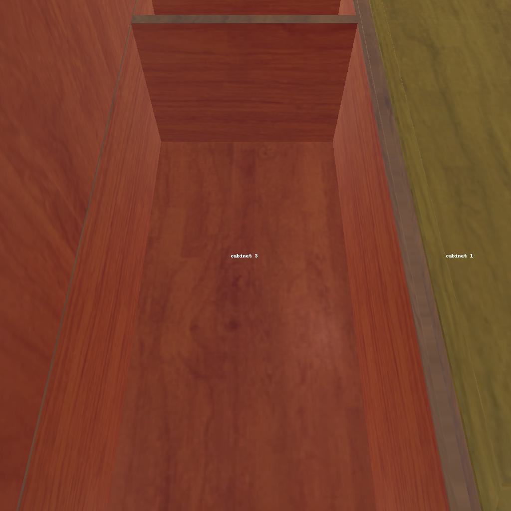
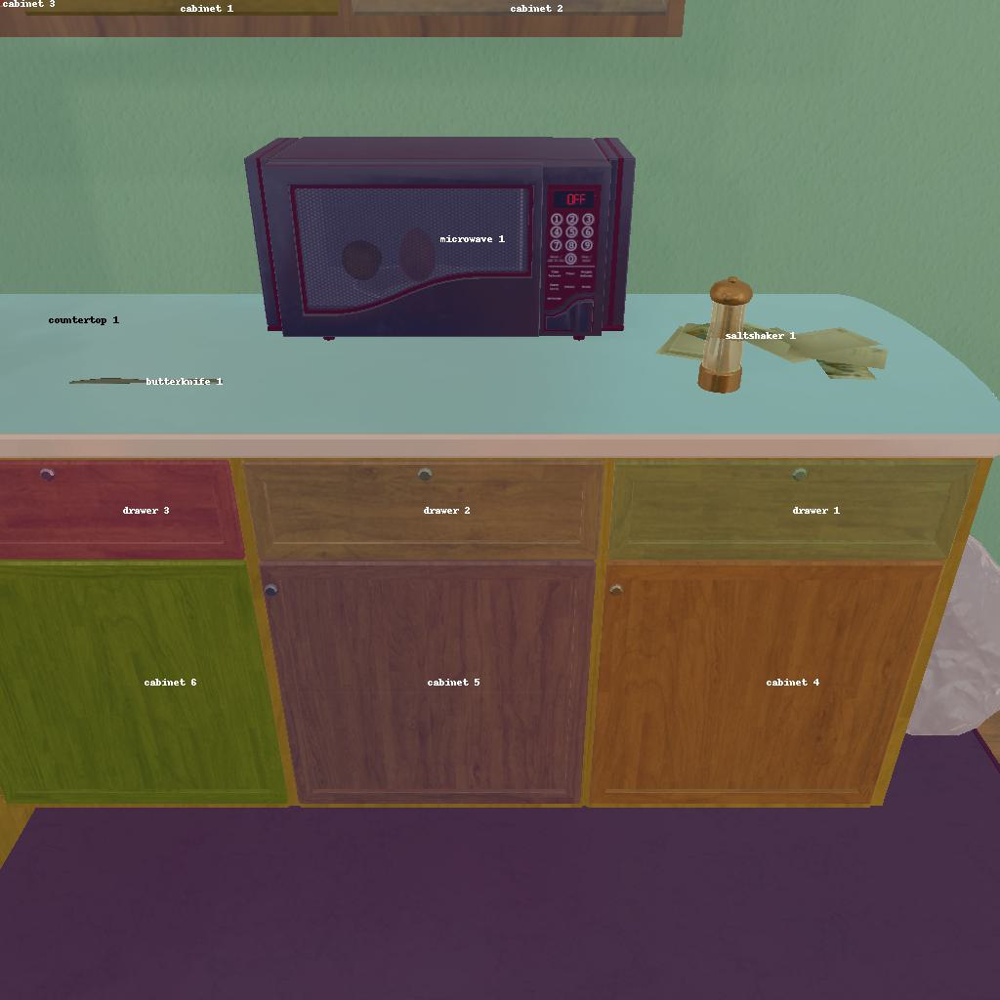

---------------------------------------------------------task: 17---------------------------------------------------------
--------------------------------------------------------------------------------------------------------------------------------------------------------------------
--------------------------------------------------------------------------------------------------------------------------------------------------------------------
Step:--------------------------------------------------------------------------12-------------------------------------------------------------------------------
----------------------------------------
VLM Prompt:
Image1:
Image2:
**Instruction**
1. Analyze the provided image to identify all visible household objects, focusing on those relevant to the task description "cool some pan and put it in stoveburner."
2. Use the analysis of the image and the task hint "The agent must find an object of the desired type, pick it up, go to a fridge, cool the object with the fridge, then find the correct location to place it, and put it down there. The agent does not need to use the fridge button or open the fridge to cool the object, and the agent just needs to do action that is "cool the object with the fridge"." to answer the question: what is the most reasonable action in the choices for the task description "cool some pan and put it in stoveburner"?
4. Decide and write the answer using the template: The answer is: (i): , where i is the real number. If there is no desired object in the image, search every place based on **Initial Observation** to find the object. And if no one is exactly correct, choose a similar answer.
**Initial Observation**
You are in the middle of a room. Looking quickly around you, you can see cabinet (1-14), countertop (1-2), microwave (1), drawer (1-5), sink (1), sinkbasin (1), coffeemachine (1), stoveburner (1-4), toaster (1), fridge (1), diningtable (1), garbagecan (1), safe (1)
**Answer Choices**
(1): go to cabinet 1
(2): go to countertop 1
(3): go to cabinet 5
(4): go to microwave 1
(5): go to cabinet 6
(6): go to drawer 1
(7): go to drawer 2
(8): go to drawer 3
(9): go to cabinet 7
(10): go to cabinet 8
(11): go to sink 1
(12): go to sinkbasin 1
(13): go to coffeemachine 1
(14): go to cabinet 9
(15): go to cabinet 10
(16): go to drawer 4
(17): go to cabinet 11
(18): go to stoveburner 1
(19): go to stoveburner 2
(20): go to stoveburner 3
(21): go to stoveburner 4
(22): go to cabinet 12
(23): go to toaster 1
(24): go to drawer 5
(25): go to countertop 2
(26): go to fridge 1
(27): go to cabinet 13
(28): go to cabinet 14
(29): go to diningtable 1
(30): go to garbagecan 1
(31): go to safe 1
(32): open cabinet 4
(33): close cabinet 4
(34): examine cabinet 4
**Answer**
Let's think step by step by following the instructions.
----------------------------------------
----------------------------------------
Original Response:
First, we need to find a pan, then cool it in the fridge, and finally put it in a stoveburner.
Starting with Image 1, no pans are visible, only labels for "cabinet 1" and "cabinet 3." Therefore, we cannot determine if a pan is inside without further action.
Moving to Image 2, we see a countertop with a microwave, a saltshaker, and a butter knife, but no pan. Below are various cabinets and drawers, which could potentially contain a pan, but they are closed, so we cannot confirm their contents from this image alone.
Based on the Initial Observation, we have a list of all possible places where a pan might be found, including cabinets (1-14), countertop (1-2), drawers (1-5), etc. Since pans are typically stored in cabinets or drawers near the stove for convenience, we should first check the cabinets and drawers closest to the stoveburners.
None of the answer choices provide an option to directly pick up a pan, so we must deduce where it is most likely to be found. Given that cabinets and drawers are common storage places for pans and that we need to cool the pan in the fridge, the most logical first action would be to check a cabinet or drawer near the stove and fridge for a pan, then go to the fridge to cool it, and finally to the stoveburner to place it.
The answer is: (3): go to cabinet 5. This cabinet is beneath the countertop and is a likely place to find a pan. Once we have the pan, we would then go to the fridge to cool it and then to one of the stoveburners to complete the task.
----------------------------------------
----------------------------------------
>>> Refine Original VLM Response and Get Pure Action: go to cabinet 5
----------------------------------------
-----------------------------------------------------------------
Running time: 16.82239580154419 seconds
Total Money: 8.211250000000003
-----------------------------------------------------------------
-----------------------------------------------------------------
Text Observation:You arrive at loc 5. The cabinet 5 is closed.
-----------------------------------------------------------------
UNSUCCEED